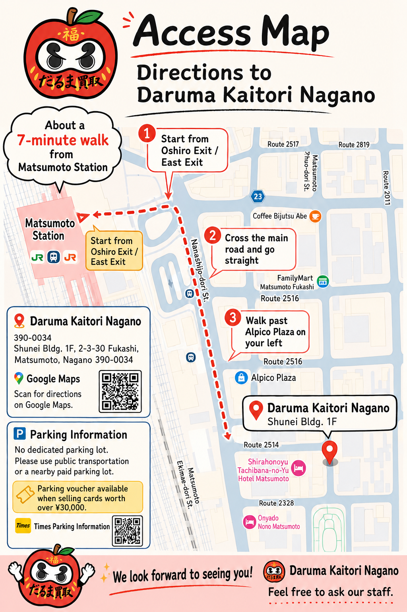

Access Guide
Access guide our trading card shop from Matsumoto Station
Daruma Kaitori Nagano is about a 7-minute walk from Matsumoto Station. Start from the Oshiro Exit / East Exit and walk toward Fukashi.
Please confirm details at the shop.
Shop Info
Shop information
- Shop name
- Daruma Kaitori Nagano
- Address
- Shunei Bldg 1F, 2-3-30 Fukashi, Matsumoto, Nagano 390-0034
- Hours
- Weekdays 13:00–19:00
Sat, Sun & holidays 12:00–19:00 - Closed
- Tuesdays and Wednesdays
- Phone
- 080-8372-3790
- Parking
- No dedicated parking lot. Please use public transportation or nearby coin parking.

Walking Route
About 7 minutes on foot
01
Start from Matsumoto Station Oshiro Exit / East ExitExit the station and go straight.
02
Cross the main roadContinue walking toward Fukashi.
03
Pass nearby landmarksAlpico Plaza and FamilyMart Matsumoto Fukashi are useful landmarks.
04
Find Shunei Bldg 1FThe shop is located on the 1st floor.
Payment
Payment and visitor support
English support is available. Tax-free shopping and credit cards are accepted. Available payment methods and tax-free conditions should be confirmed at the shop.